Historia
Mercedes-Benz celebra 130 años del camión con una caravana histórica
Una ruta de 1.086 kilómetros une patrimonio, mecánica y evolución del transporte.
Actualidad de camiones, cambios del sector, tecnologia y consejos para elegir repuestos con mejor criterio.
Una caravana histórica recorre 1.086 kilómetros por Alemania y el Benelux.
Una ruta de 1.086 kilómetros une patrimonio, mecánica y evolución del transporte.
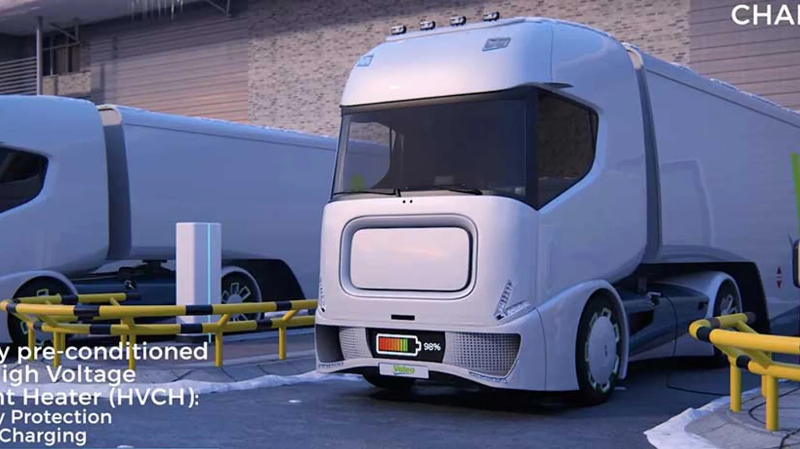
Gestión térmica, ADAS y nuevas tareas de diagnóstico para las próximas flotas.
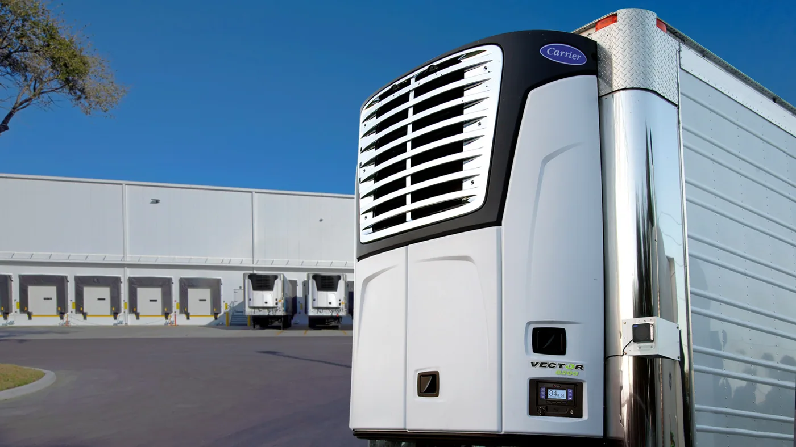
Hasta tres temperaturas sin motor diésel para sumar almacenamiento en el predio.
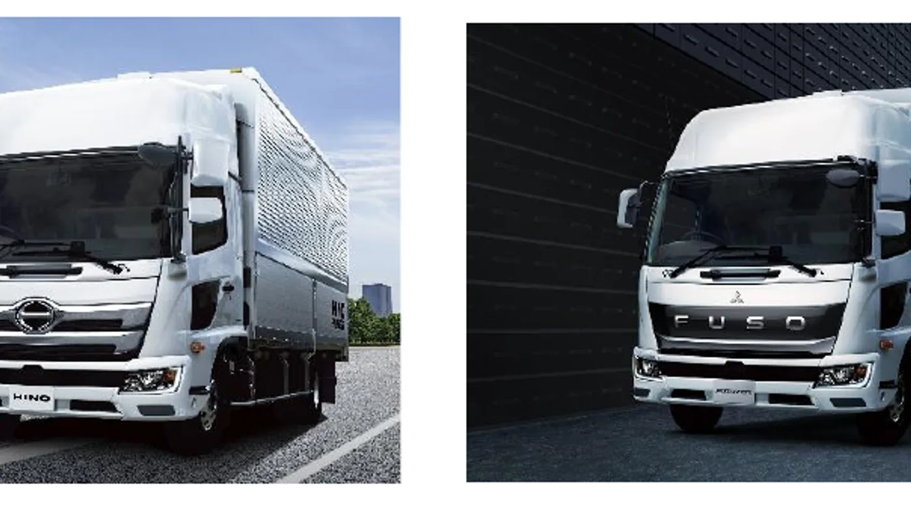
El primer producto concreto de la integración entre Hino y Mitsubishi Fuso.
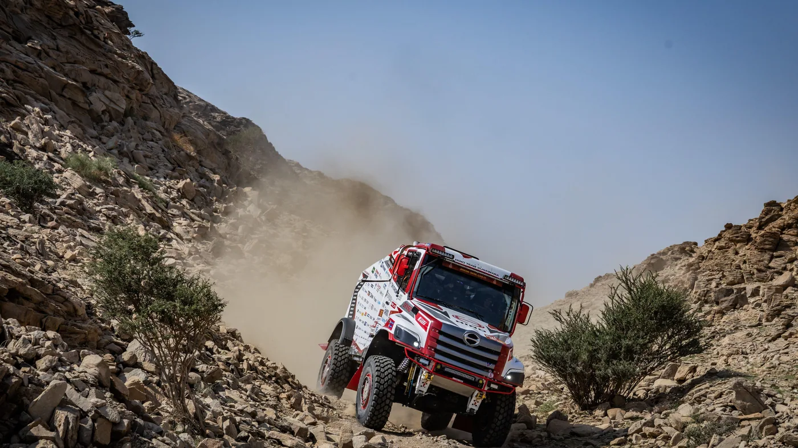
Un recorrido de 8.000 kilómetros y la experiencia técnica de tres mecánicos de la red.
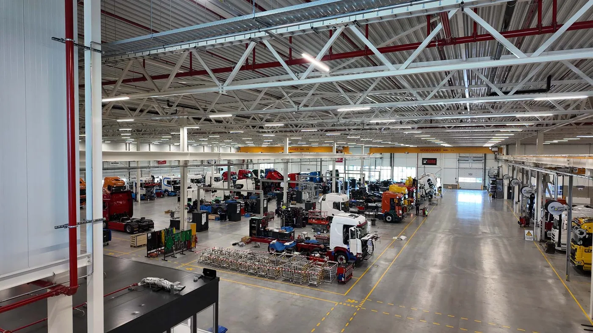
104 especialistas analizaron cómo reducir retrabajos y mejorar cada montaje.
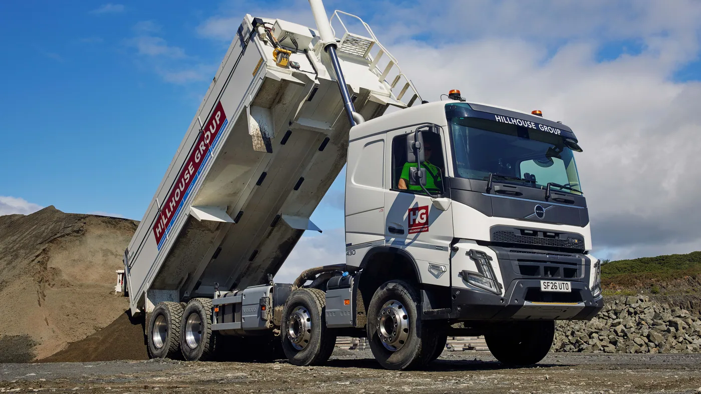
Carga útil, pisos Hardox y mantenimiento para una operación de trabajo continuo.
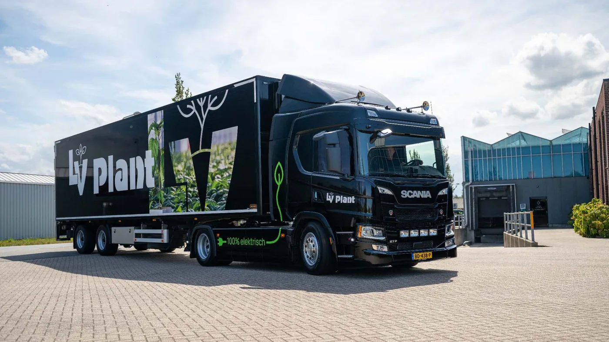
Distribución urbana, acceso bajo y un centro de carga de 480 kW compartido.

Treinta litros cada dos días y un ahorro anual estimado en R$96.000.

EPA 2027, ocho millones de millas de prueba y una nueva gestión del postratamiento.
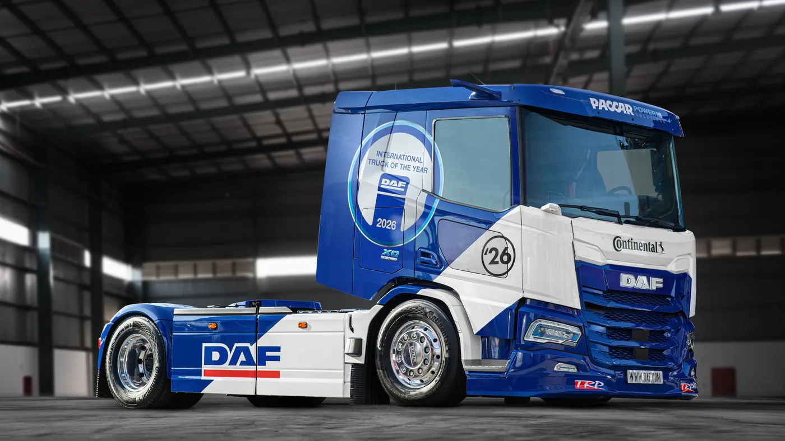
Una tractora de 480 hp, batería de 525 kWh y más de 500 km posibles por carga.
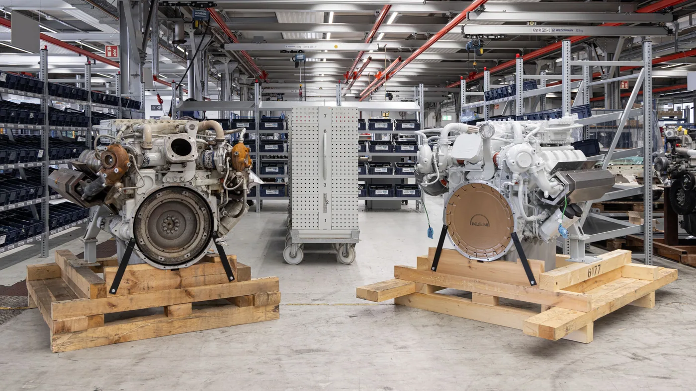
Qué comparó el estudio y cómo distinguir una remanufactura industrial de una reparación.
Cómo combina combustible, recorridos y conducción para mejorar costos, seguridad y mantenimiento.
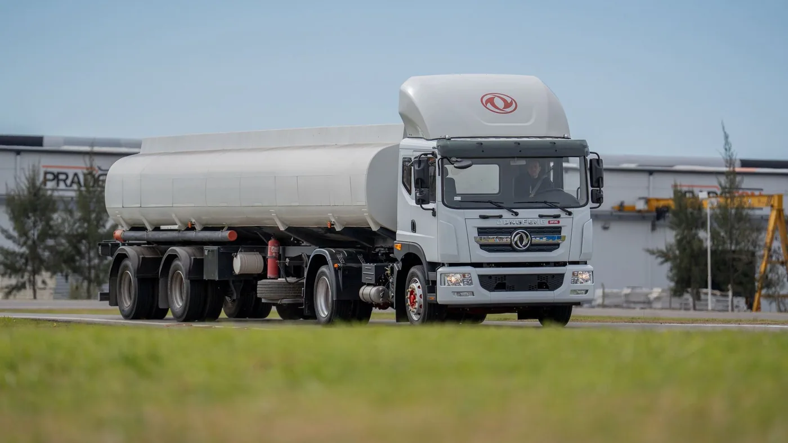
Motor Cummins de 300 hp, caja de nueve marchas y capacidad de tracción de 38 toneladas.

Motor, frenos, normativa y mantenimiento detrás de una operación a más de 4.500 metros.
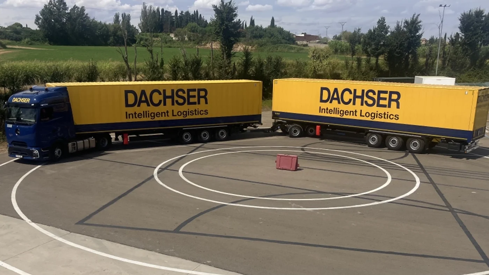
Sensores, dirección activa y gemelo digital para conjuntos europeos de hasta 32 metros.
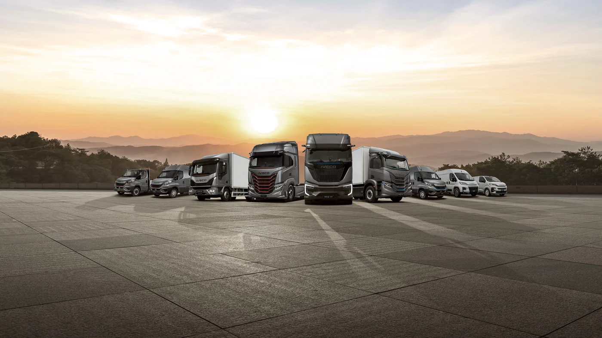
Ocho vehículos, cinco países y una propuesta centrada en pruebas, servicios y contacto directo.
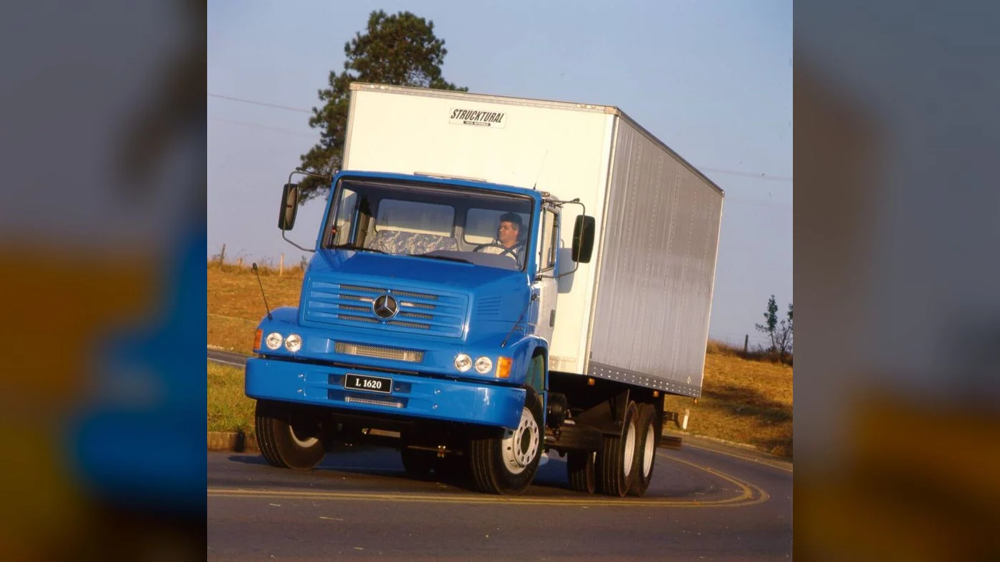
De los primeros 200 CV a las versiones con intercooler: mecánica, usos y claves para identificar cada unidad.
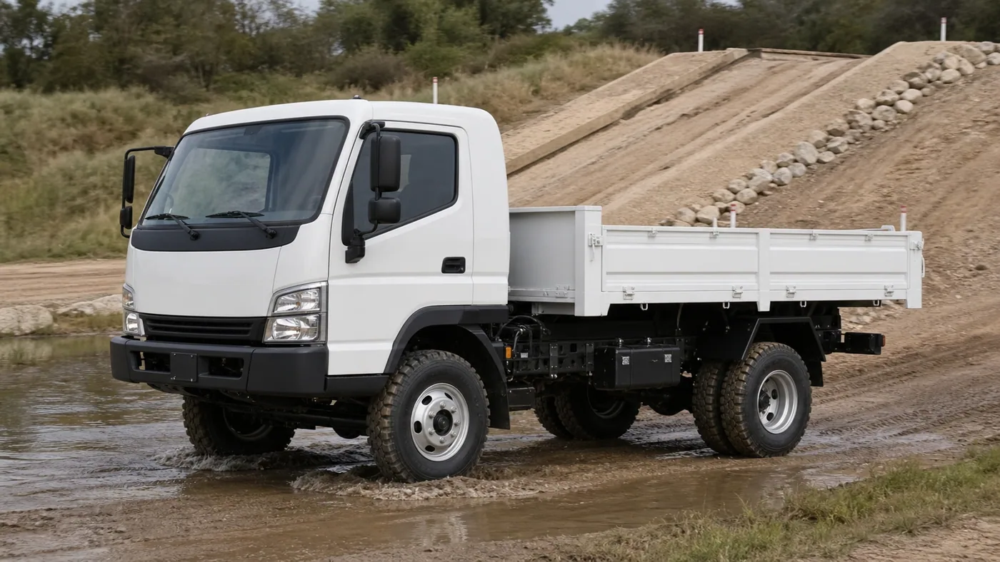
Cómo funciona el 11.180 4x4, dónde podrá probarse y qué conviene evaluar antes de incorporarlo.
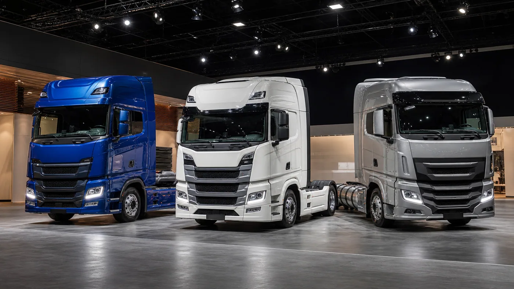
El nuevo 11 litros, el avance del gas y los servicios que acompañan la renovación de flotas.
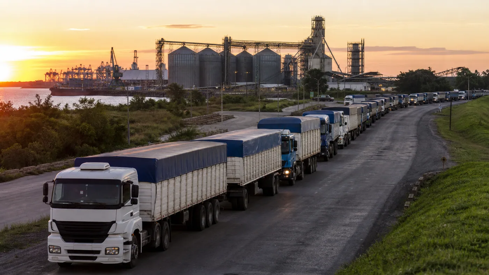
Casi 11.500 ingresos fluidos en Santa Fe y más de 500 unidades demoradas en el sur bonaerense.
La reapertura tras el temporal histórico, el operativo binacional y cómo preparar el cruce.
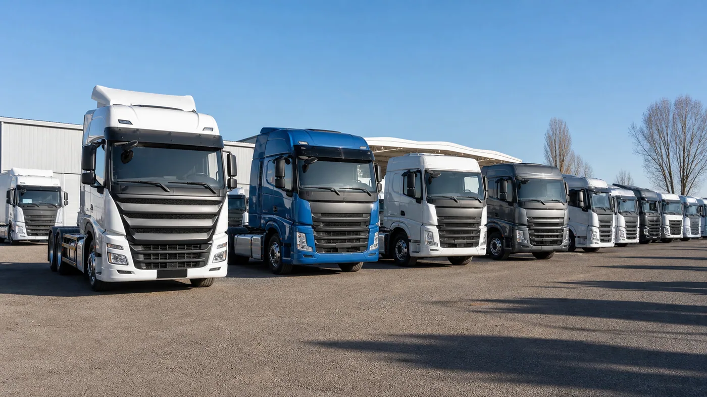
Modelos líderes, marcas que crecieron y las señales que dejan los números para el sector.
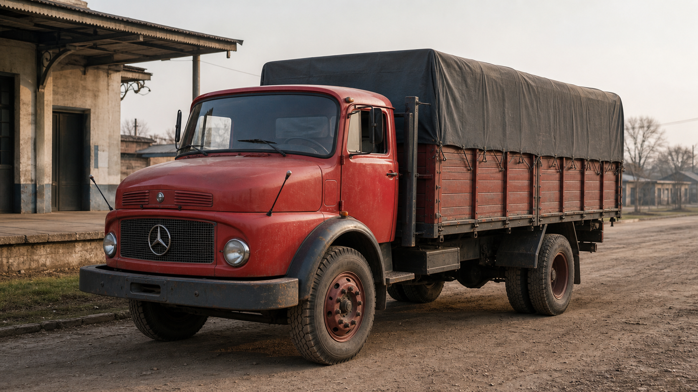
Desde su nacimiento en 1967 hasta el motor OM 352, sus versiones y el legado que todavía sigue en marcha.

Una mirada simple a los patentamientos y a lo que conviene observar desde el mostrador de repuestos.

Mas configuraciones, cambios de dimensiones y el impacto en mantenimiento y uso diario.

Que se viene para flotas, talleres y casas de repuestos ante camiones de nueva generacion.